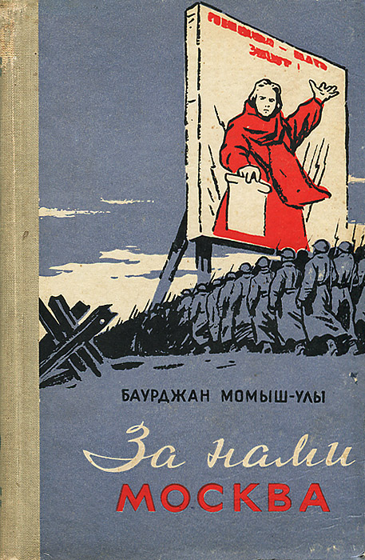
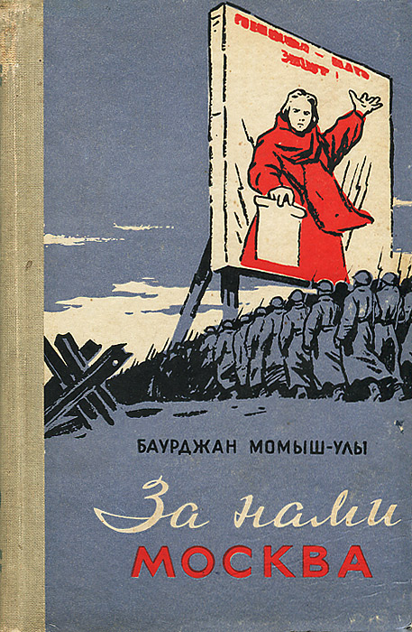

Серия романов, написанная британской писательни- цей Дж. К. Роулинг. Книги представляют собой хронику приключений юного волшебника Гарри Поттера, а также его друзей Рона Уизли и Гермионы Грейнджер, обучающихся в школечародейства и волшебства Хогвартс. Основной сюжет посвящён противостоянию Гарри и тёмного волшебника по имени лорд Воланде Морт, в чьи цели входит обретение бессмертия и порабощение магического мира.

Всемирно известный роман-эпопея М. Ауэзова. "Путь Абая" - лучшее произведение, которое подняло казахскую художественную прозу на высокий уровень, привнесло в мировую литературу высокийэстетический вкус, художественную энергию. В своем романе-эпопее Ауэзов всесторонне раскрыл традиции казахского народа. Мудрый сын казахского народа изобразил Абая, его творческую и деятельную личность с незаурядной индивидуальностью в искусстве слова.
Американский писатель, работающий в разнообразных жанрах, включая ужасы, триллер, фантастику, фэнтези, мистику, драму, детектив; получил прозвище «Король ужасов». Продано более 350 миллионов экземпляров его книг, по которым было снято множество худо- жественных фильмов и сериалов, телевизионных постановок, а также нарисованы комиксы.


Можно ли считать себя по-настоящему образованным человеком, не прочитав "Войну и мир"? - Думаю, ответ на этот вопрос очевиден. Эпический роман Льва Толстого "Война и мир" по праву считается жемчужиной мировой литературы. Критики всего мира признают "Войну и мир" образцом нового европейского романа, хотя он не является таковым в полной мере. С технической точки зрения, можно назвать это произведение абсолютно совершенным, - описания эпических событий войны с Наполеоном 1812 года, и в то же время филигранно отточенные характеры всех слоев русского общества того времени.
«За нами Москва» является тематическим продолжением «Волоколамского шоссе» А. Бека. Здесь нет ни вымышленных событий, ни вымышленных героев. Это записки человека, рассказывающего о том, что происходило или на его глазах, или с ним самим. Автор не скрывает жизненной правды, порой горькой, тяжелой. Но это не заслоняет его светлой веры в советского человека, веры в победу, которая не покидала наших бойцов и офицеров в трудные минуты.
 
